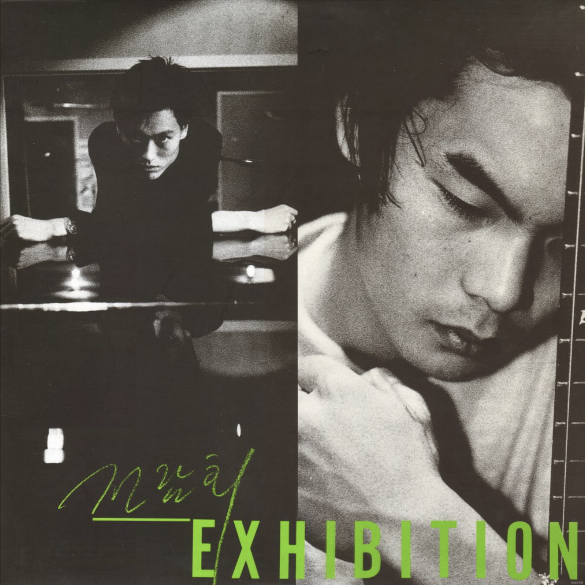
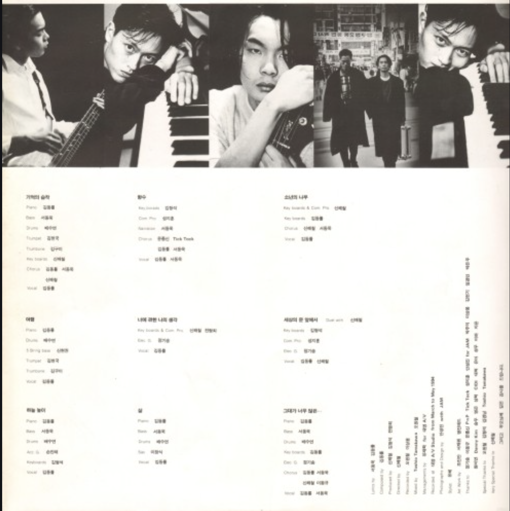
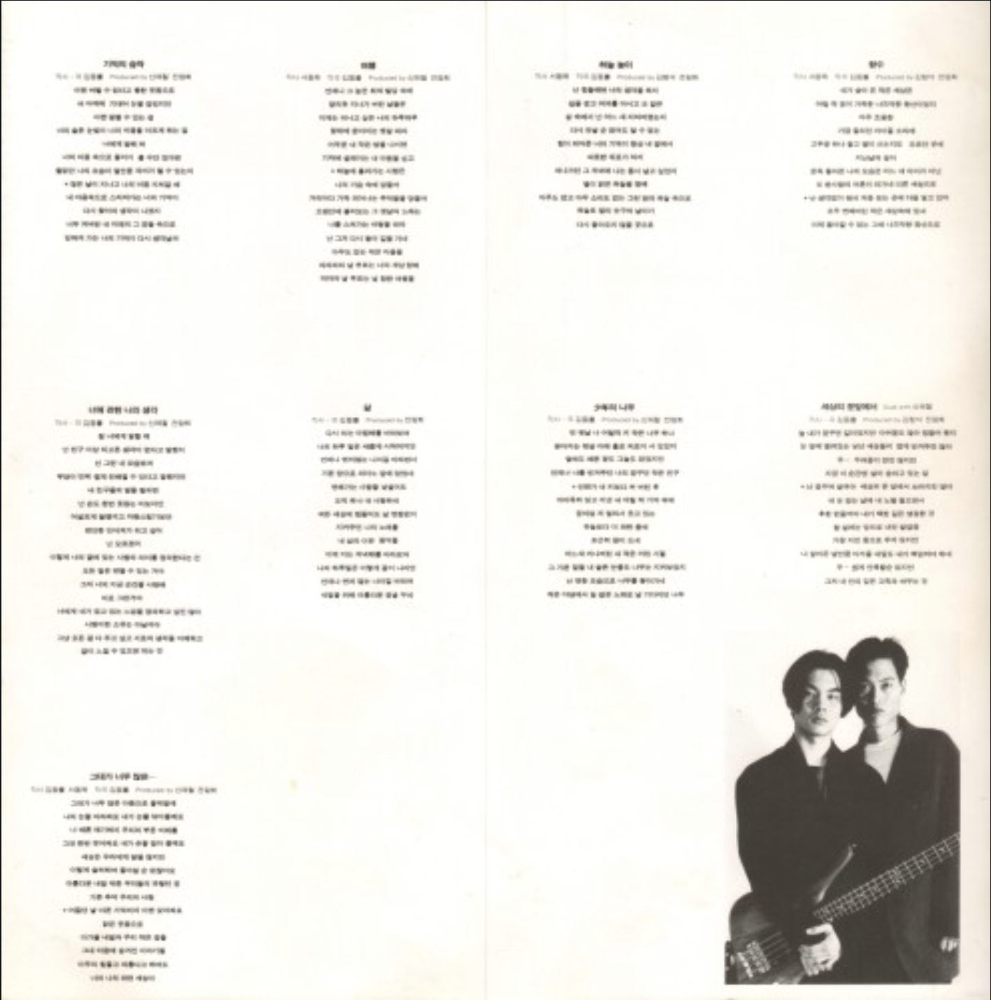
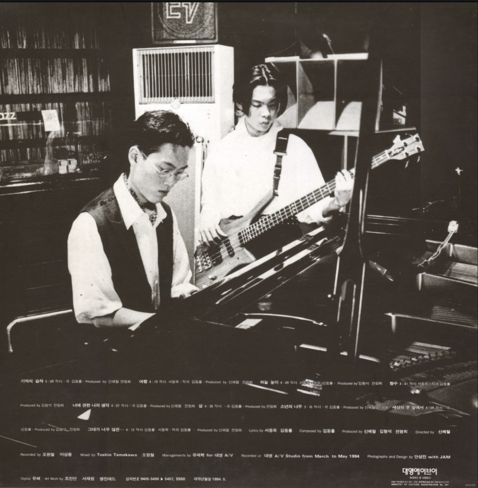
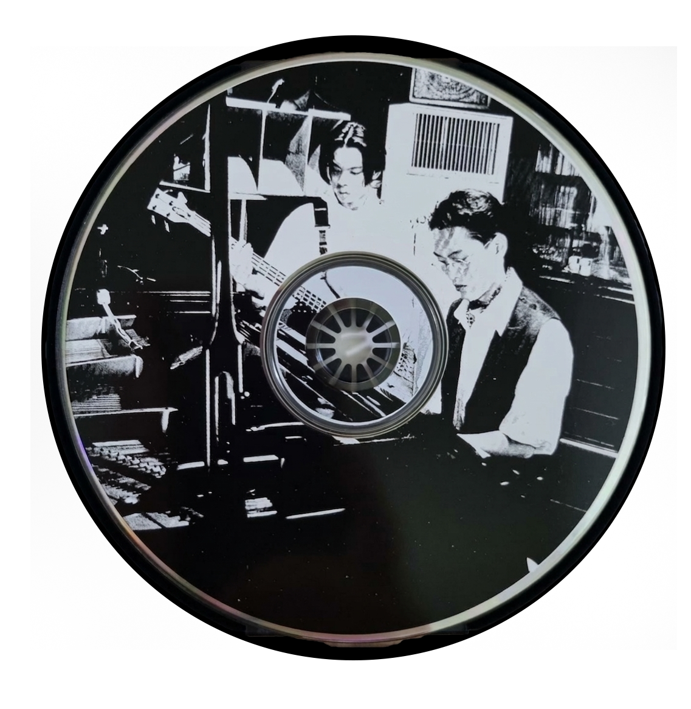

Exhibition
<1994>
가수 소개
전람회는 김동률과 서동욱으로 이루어진 1990년대 대표 감성 듀오이다. 1993년 MBC 대학가요제 대상 수상으로 데뷔했으며, ‘기억의 습작’, ‘취중진담’, ‘이방인’ 등의 명곡으로 큰 사랑을 받았다. 재즈와 발라드를 결합한 세련된 음악 스타일로 높은 음악성을 인정받았고, 1997년 3집 《졸업》을 끝으로 해체했다.
앨범소개
94년, 랩과 레게가 판을 치던 가요계에 잔잔한 재즈 스타일의 고급스러운 선율을 느낄 수 있는 '기억의 습작'을 불러 많은 사람들의 주목을 받게 된 앨범.93년 대학가요제에서 '꿈속에서'라는 곡으로 대상을 타면서 음악 생활을 하게 된 전람회는 '기억의 습작'외에도 '하늘 높이'등 전람회만의 독특한 음악세계를 보여주고 있다.
🎵




